Creative Programming: Colour
Lecture 3 (10 Feb)
(Re)visiting slides?
You can jump to any slide with the menu to the (bottom) left.
Did you miss a slide or want to revisit? Open the narration tab while studying to get an explanation of difficult slides.

Our World in Colour
What is a colour?
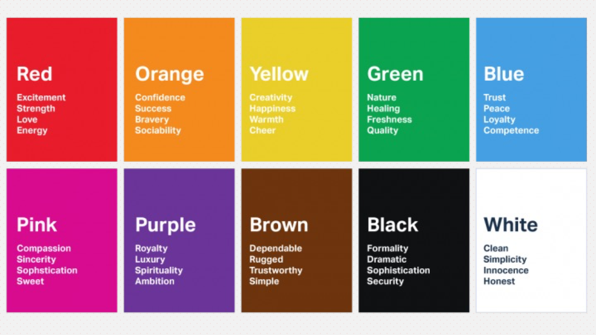
The pattern behind colour names
Newton
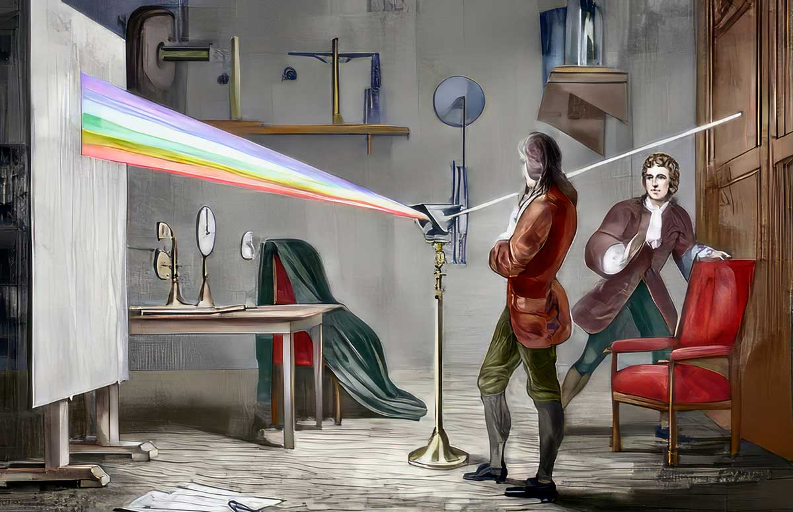
Colour in nature
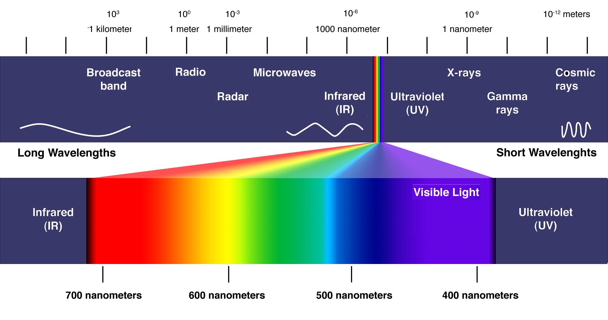
Colour perception
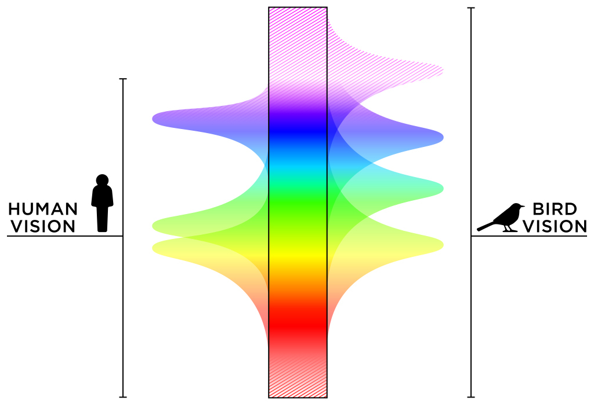
Bird vision
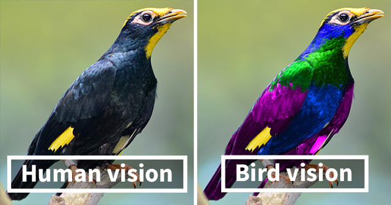
Bees and humans
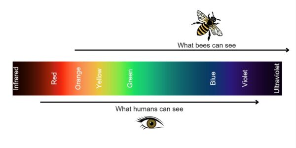
Bee vision
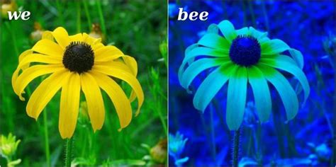
Categorising Colour: Goethe
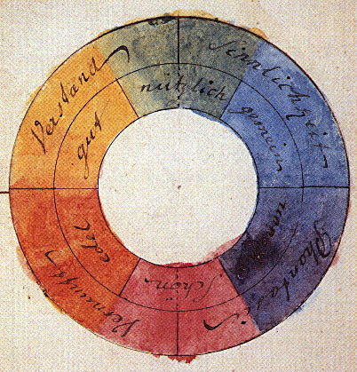
Categorising Colour: Tobias Mayer
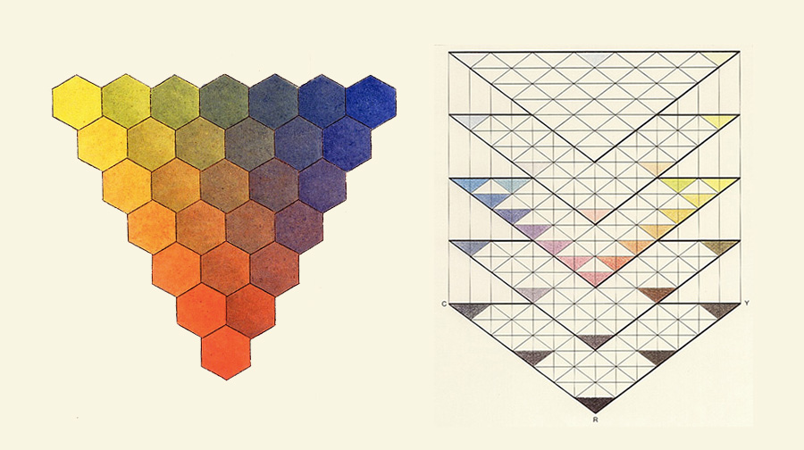
Categorising Colour: Philip Otto Runge
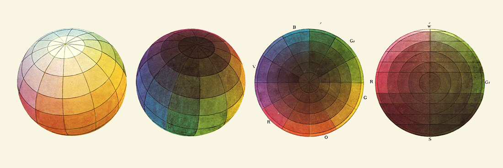
Categorising Colour: Michel Eugène Chevreul
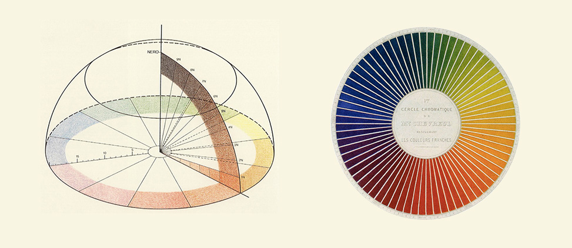
Categorising Colour: Albert Henry Munsell
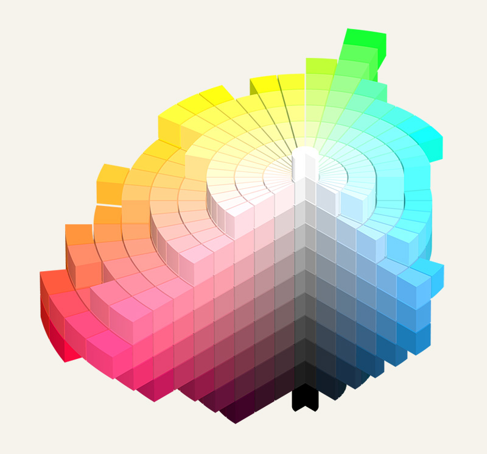
Color For Computers (+ Recap)
Subtractive and Additive
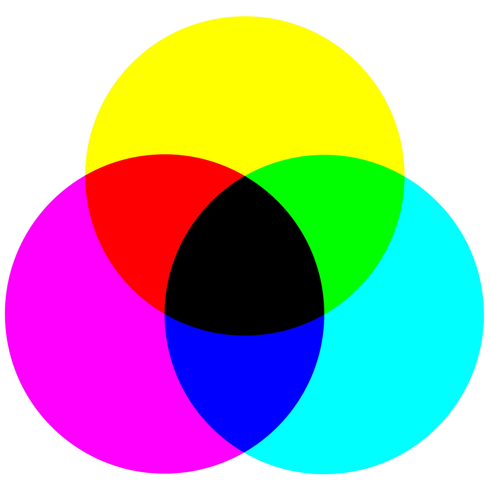
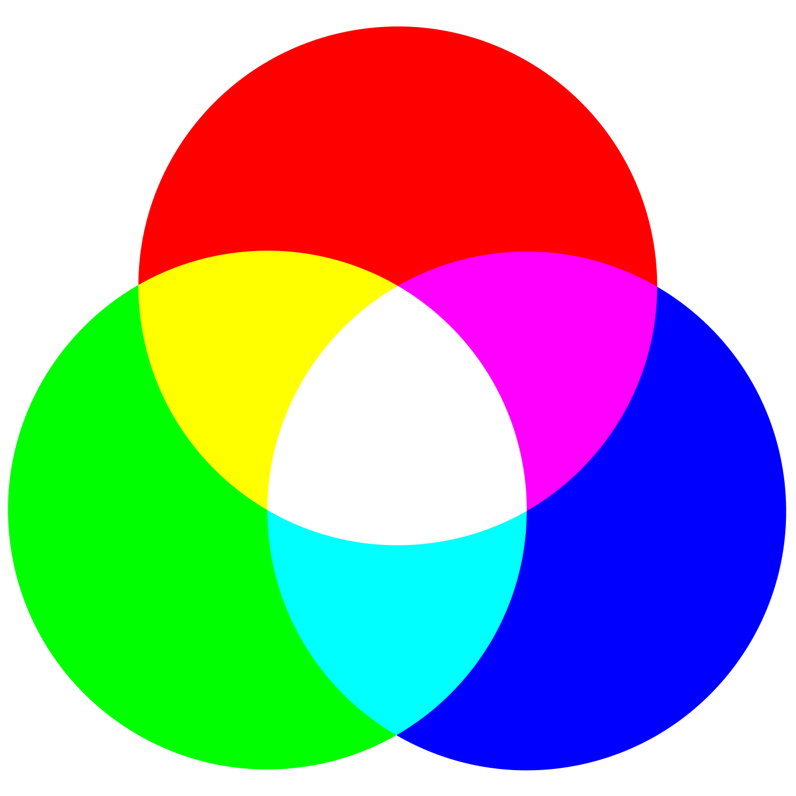
Subtractive
- Color as it is perceived by light bouncing off of material
- Wavelengths are absorbed by the material and reflected to the eye
Subtractive example: printing
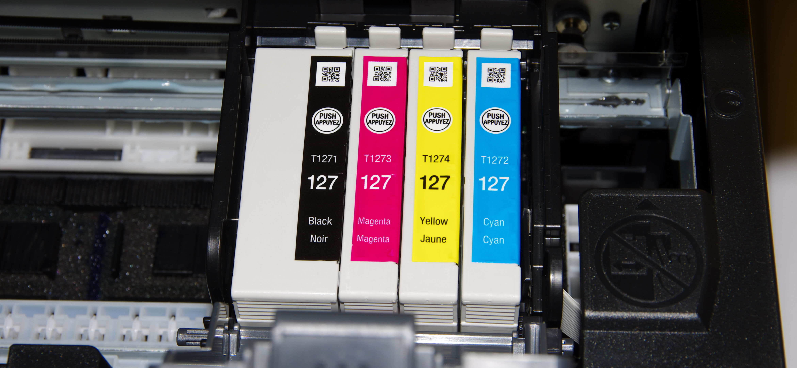
Additive
- Color as it is perceived by light emitted from a source
- Adding colors together increase the total visible wavelengths, making white
We have seen this before
- High values make lighter colours
- Low values make darker colours
- Single argument gives greyscale colours
- Previously, we directly wrote e.g.
fill(255)to set the fill colour - NEW:
colordefines a color that we can store in a variable to use later
Red, Green, Blue
- Colour model of early photography
- Three numerical values represent the intensity of red, green, and blue light channels
RGB with direct numbers
- Whenever a function needs a colour, we can specify the individual RGB values directly as arguments
RGB with variables
- We can also use variables to store the RGB values, which allows us to change the colour dynamically
Arrays
- Using arrays allows us to define a single variable to store our full palette of colours, which we can then access with an index
Loops
- Loops can automatically iterate through our colour palette
Gradient
Class Assignment: Gradient
With the help of the previous slides, create a sketch that draws a range of distinct colours (e.g. a rainbow)
Convert it to a continuous gradient by using loops to draw many rectangles with slightly different colours
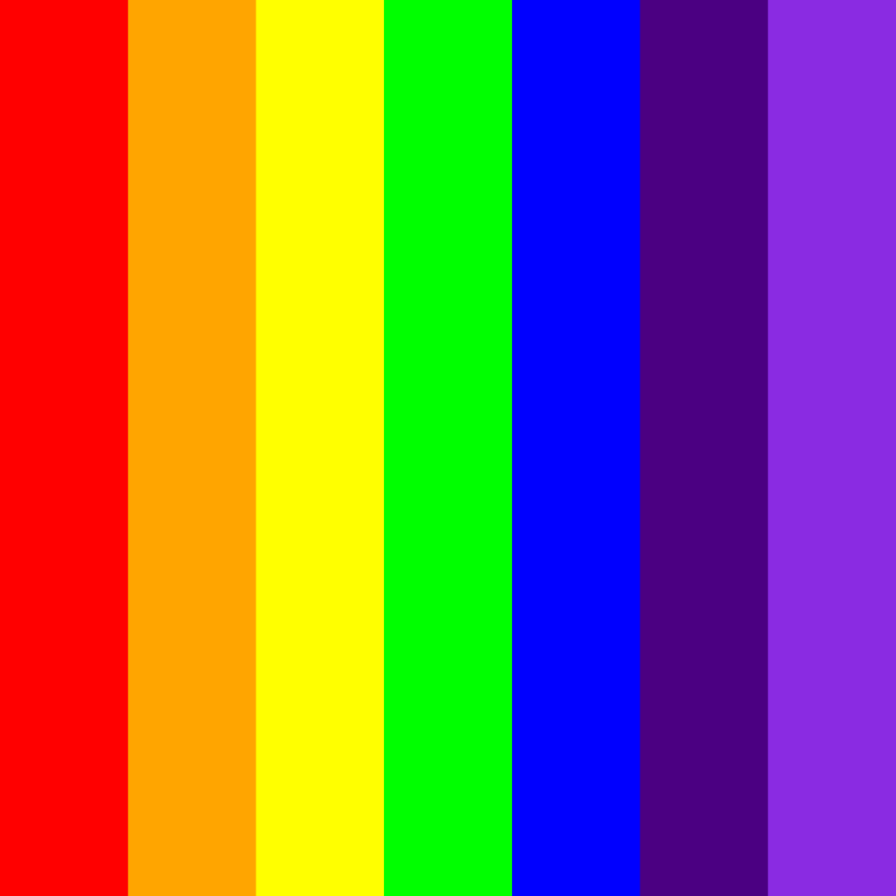
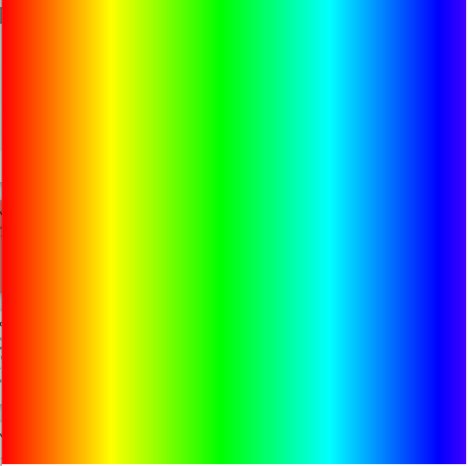
Project Introduction
Project Introduction
- We will now introduce the project
- The description, groups, and rubric can be found on LearnIT
More Colour
Using RGB 1
- There are a few ways to invoke RGB in p5.js
- One of them is to use three numbers from
0-255
Using RGB 2
- You may have seen hexadecimal colours in other software, e.g. Photoshop
- Hexadecimal codes use three groups (R-G-B) of 2 characters in a string
- 0 is the lowest, F is the highest
Using RGB 3
- p5js also support colour names
- Directly use a (supported) colour name when declaring a colour
The fourth value: alpha
- RGB can also have a fourth value, called alpha
- Alpha controls the transparency, where
0is fully transparent and255is fully opaque - These transparent colours are useful for layering and blending effects
let transparentRed = color(255, 0, 0, 127); // Creates a semi-transparent red colour
let transparentGreen = color(0, 255, 0, 200); // Creates a slightly transparent green colour
let transparentBlue = color(0, 0, 255, 50); // Creates a very transparent blue colour
let transparentPurple = color(134, 42, 200, 100); // Creates a semi-transparent purple colourAlpha Example
- In this example we draw multiple shapes with different alpha values to show how they blend together
Adding imagery
- So far we have only used shapes to create our drawings
- We can add images to p5js as long as we can tell p5js where to find them
- We can load images from an url (
"https://...") - Or from local files, in the same folder as our sketch (
"imageName.png")
- We can load images from an url (
Loading images
- To load an image, we can use the
loadImagefunction, which takes the path to the image as an argument and returns a p5 image object - We have to load the image in the
preloadfunction, which is similar tosetupbut is specifically designed for loading files before the sketch starts - We can then use the
imagefunction to draw the image on the canvas, specifying the position and size
Image Example
- In this example we load an image of a cat and draw it on the canvas
Tinting
- We can apply what we have learned about colours to images
tintapplies a filter to the image, changing its colour and/or transparency
Revisiting old drawings
Class Assignment: Alpha
- Go through your old sketches and add a fourth alpha value to your colours to make them transparent
- Replace a rectangle with an image, and make it transparent using
tint - Experiment with different alpha values to see how it affects the appearance of your drawings, especially when layering multiple shapes on top of each other
Drawing Angles
Straight rectangles
- So far we have only drawn straight shapes and images
- We have always used the top-left corner as the reference point for positioning our shapes and images
- How can we draw ‘angled’ shapes and images, i.e. rotated?
Translation
- We can use the
translatefunction to change the origin point - This allows us to position our shapes and images relative to a different point on the canvas
Offset coordinates
- Be careful when using
translate, as it changes the coordinate system - The coordinate system will reset at the end of the
drawfunction - You have to put the
translateat the start of thedrawfunction if you want to apply it every time
Offset coordinates
mouseXandmouseYgive the position of the mouse relative to the original coordinate system, not the translated one- You need to subtract the extra translation from the mouse coordinates to get the correct position in the translated coordinate system
Rotation
- We can use the
rotatefunction to rotate around the origin point - As with
translate, the rotation will affect everything after it - We need to set
angleModetoDEGREESif we want to use degrees
Rotate and draw
- As with
translate, the rotation resets at the end of thedrawfunction - We can get a spinning effect if every draw we rotate a bit more (e.g. using
frameCount)
Symmetry
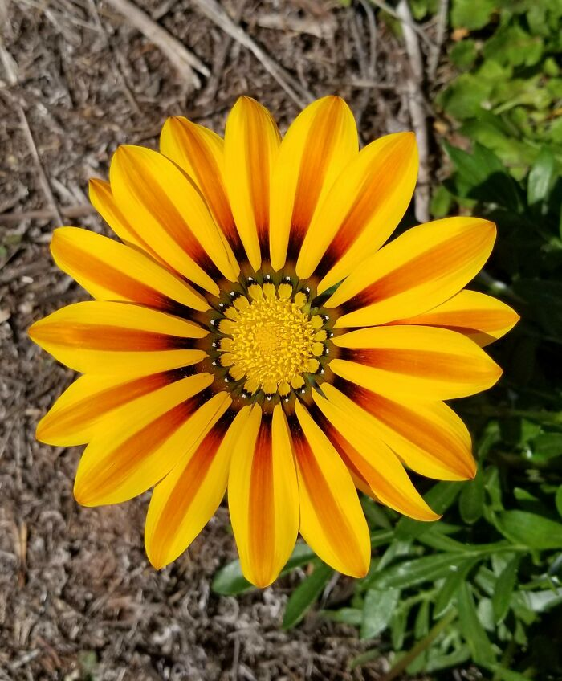
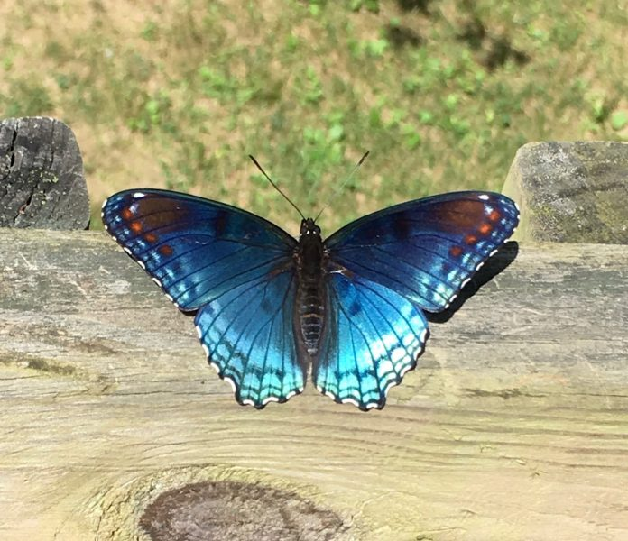
Symmetry in programming
- If we repeat our draw code multiple times with different translations/rotations, we can create symmetrical patterns
- Place your draw code in a for-loop to automatically repeat it
Drawing with symmetry
Class Assignment: Symmetry
- Set the origin to the center of the canvas and draw some simple shapes in one direction.
- Use a for-loop to repeat the same shapes in different directions by applying different rotations. Try to create a symmetrical pattern.
Chasing the mouse
pmouseXandpmouseYgive the previous position of the mouse (pmouse as in previous mouse)- By not refreshing the background we can create a trail effect that follows the mouse
Mandala
- By combining symmetry and mouse trails we can create a mandala effect
Further transformations
- We can also use
scaleto change the size of our shapes and images shearXandshearYcreate slanting effectspush()andpop()allow us to save and restore the state, which is useful for applying transformations to specific parts of our drawing without affecting the rest- All transformations can be combined to create complex effects, but be careful with the order of transformations as they affect each other
Exercise 2
- Exercise 2 is all about drawing with colour and transformations.
- Good luck!
Creative Programming 2026 Lecture 3 - Ties Robroek - IT University of Copenhagen